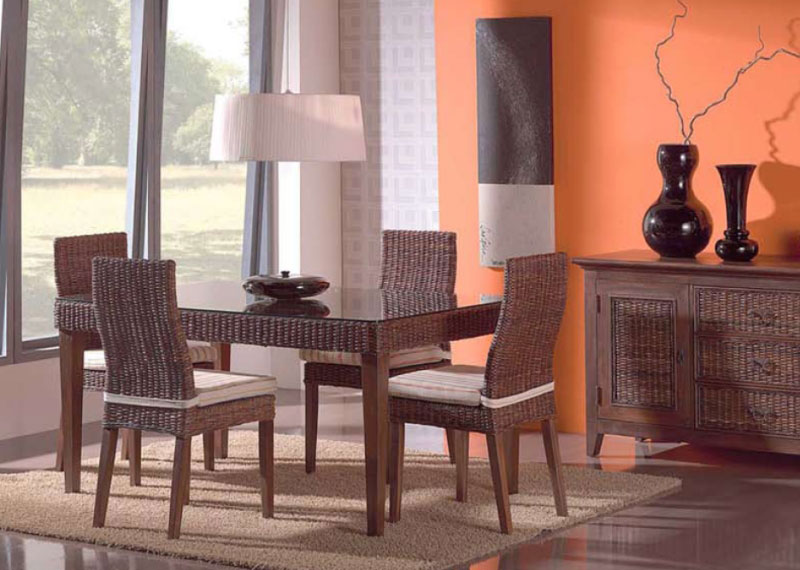
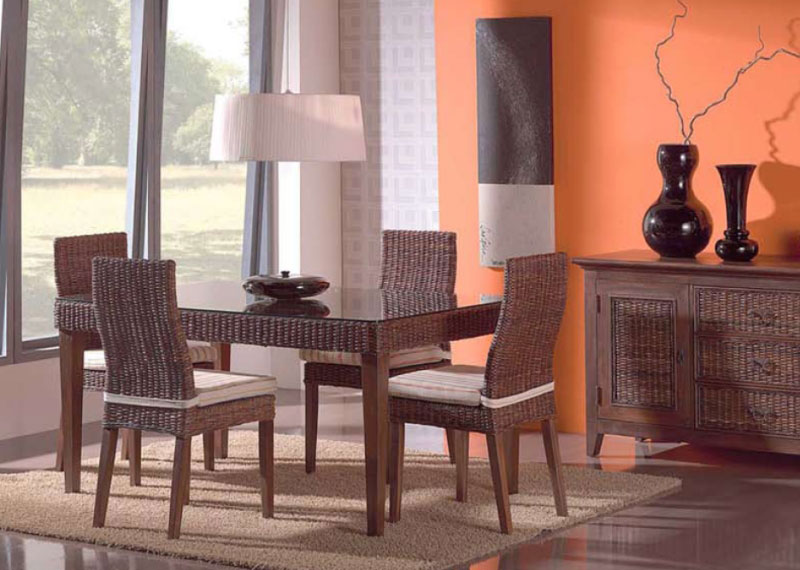

sufragerie - definiție și paradigmă | dexonline
2020.09.21 00:38

donează
navigare despre noi informații contact blog implică-te cum poți ajuta topul voluntarilor resurse abrevieri folosite articole lingvistice ghid de exprimare cuvântul zilei cuvântul lunii cuvinte aleatorii Scrabble unelte legături externe English español magyar română Anonim preferințe autentificare rezultate (12) declinări12 definiții pentru sufragerie sofragerie
Dicționare explicative
Explică cele mai întâlnite sensuri ale cuvintelor.
SUFRAGERÍE, sufragerii, s. f. Cameră special amenajată și mobilată în care se servește masa. ♦ Mobilierul pentru această cameră. [ Var. : sofrageríe s. f. ] – Sufragiu 1 + suf. -ărie.
sursa: DEX 09 (2009) adăugată de blaurb. acțiuni semnalează o greșeală permalink +1 definiție identică ×Semnalează o greșeală
Vă mulțumim pentru semnalare! închideSUFRAGERÍE, sufragerii, s. f. Cameră special amenajată și mobilată în care se servește masa. ♦ Mobilierul pentru această cameră. [ Var. : sofrageríe s. f. ] – Sufragiu 1 + suf. -ărie.
sursa: DEX 98 (1998) adăugată de rain_drop acțiuni semnalează o greșeală permalinkSUFRAGERÍE, sufragerii, s. f. 1. Cameră în care se servește masa și care este mobilată cu mobilele necesare pentru aceasta. Cînd intrarăm în sufragerie, însetați, plini de foame și de frig, ne izbi deodată lumina vie a lumînărilor. SADOVEANU, O. I 452. În sufrageria conacului... o fetișcană așternea masa pentru o singură persoană. REBREANU, R. II 70. Se așteptau musafiri la masă. În sufragerie se auzea zgomot de tacîmuri. VLAHUȚĂ, O. A. 150. 2. Mobilierul dintr-o sufragerie ( 1 ), compus din masă, bufet etc. Sufragerie de nuc. – Variantă: sofrageríe (C. PETRESCU, O. P. II 117, CARAGIALE, O. II 99, ALECSANDRI. T. I 93) s. f.
sursa: DLRLC (1955-1957) adăugată de LauraGellner acțiuni semnalează o greșeală permalinkSUFRAGERÍE ~i f. 1) Cameră în care se servește masa. 2) Mobilier pentru asemenea cameră. [G.-D. sufrageriei; Sil. su-fra- ] / sufragiu + suf. ~ărie
sursa: NODEX (2002) adăugată de siveco acțiuni semnalează o greșeală permalinkSOFRAGERÍE s. f. v. sufragerie.
sursa: DEX 09 (2009) adăugată de blaurb. acțiuni semnalează o greșeală permalink +2 definiții identiceSOFRAGERÍE s. f. v. sufragerie.
sursa: DEX 98 (1998) adăugată de IoanSoleriu acțiuni semnalează o greșeală permalinkSOFRAGERÍE s. f. v. sufragerie.
sursa: DLRLC (1955-1957) adăugată de LauraGellner acțiuni semnalează o greșeală permalinksofragerie f. sală de mâncare.
sursa: Șăineanu, ed. VI (1929) adăugată de blaurb. acțiuni semnalează o greșeală permalinksofrageríe f. (d. sofragiŭ. D. rom. vine ngr. sofradzaria ). Camera în care e masa de mîncare (numită și sală de mîncare, după fr. sale à manger, ĭar pe la internate, cazarme, închisorĭ refectoriŭ ). – Și su-.
sursa: Scriban (1939) adăugată de blaurb. acțiuni semnalează o greșeală permalinkDicționare morfologice
Se indică corespondența dintre forma de bază a unui cuvânt și flexiunile sale.
sufrageríe (su-fra-) s. f. , art. sufragería, g.-d. art. sufrageríei; pl. sufrageríi, art. sufrageríile (-ri-i-)
sursa: DOOM 2 (2005) adăugată de raduborza acțiuni semnalează o greșeală permalinksufrageríe s. f. (sil. -fra- ), art. sufragería, g.-d. art. sufrageríei; pl. sufrageríi, art. sufrageríile (sil. - ri-i -)
sursa: Ortografic (2002) adăugată de siveco acțiuni semnalează o greșeală permalinksufragerie
sursa: MDO (1953) adăugată de Ladislau Strifler acțiuni semnalează o greșeală permalinksofragerie , -riei gen. a.
sursa: IVO-III (1941) adăugată de Ladislau Strifler acțiuni semnalează o greșeală permalinkDicționare relaționale
Nu reprezintă definiții, ci se indică relații între cuvinte.
SUFRAGERÍE s. sală de mese, sală de mâncare, (înv. și reg.) prânzitor, (înv.) sală de ospețe.
sursa: Sinonime (2002) adăugată de siveco acțiuni semnalează o greșeală permalinkSUFRAGER I E s. sală de mese, sală de mîncare, ( înv. și reg. ) prînzit o r, ( înv. ) sală de osp e țe.
sursa: Sinonime82 (1982) adăugată de LauraGellner acțiuni semnalează o greșeală permalink Intrare: sufragerie sufragerie substantiv feminin silabație: -fra- substantiv feminin ( F134 ) Surse flexiune: DOR nearticulat articulat nominativ-acuzativ singular sufrager i e sufrager i a plural sufrager i i sufrager i ile genitiv-dativ singular sufrager i i sufrager i ei plural sufrager i i sufrager i ilor vocativ singular plural sofragerie substantiv feminin substantiv feminin ( F134 ) nearticulat articulat nominativ-acuzativ singular sofrager i e sofrager i a plural sofrager i i sofrager i ile genitiv-dativ singular sofrager i i sofrager i ei plural sofrager i i sofrager i ilor vocativ singular plural Copyright © 2004-2020 dexonline (https://dexonline.ro) licență confidențialitate găzduit de Hosterion- Mobila Living - Alege Mobila de sufragerie - eMAG.ro
- Mobilă living și sufragerie | FAVI.ro
- Mobilă living - DEDEMAN - Dedicat planurilor tale
- Sufragerie | H&M RO
- Mobilier Sufragerie - Artmobel
- Mobila living | Mobila sufragerie - Vezi Oferta - Elvila.ro
- Canapele extensibile si fixe • living •2/3 locuri ᐈ Homelux
- Articole pentru Sufragerie| Miniprix
- Biblioteci Living » Modele Moderne pentru Sufragerie ...
- Sufragerie IKEA - IKEA
- Mobila Living - Alege Mobila de sufragerie - eMAG.ro
Mobilier / Mobila Sufragerie -mobila stil - mobila arta - cu un design fluid in linii curbe din lemn masiv de esenta tare de fag innobilat cu furnire estetice de nuc, paltin, trandafir, radacina de nuc si mahon combinat cu elemente sculptate manual, in finisaj nuc cu sculptura si intarsie.
- Mobilă living și sufragerie | FAVI.ro
Găsește mobilă cameră de zi și sufragerie pe placul tău, pentru livinguri mai mici sau mai mari.
- Mobilă living - DEDEMAN - Dedicat planurilor tale
Sufragerie; Bucătărie; Baie; Camera copiilor; Classic Collection; Cumpărături sortate după produs. Cumpărături sortate după produs; Vizualizaţi tot; Perne și fețe de pernă; Aşternuturi pat; Decoraţiuni; Îmbrăcăminte de casă; Accesorii pentru baie și duș; Soluții de depozitare și organizatoare; Pături; Perdele; Covoare ...
- Sufragerie | H&M RO
Descoperiti gama disponibila de mobila living si sufragerie. Alegeti o biblioteca standard sau puneti-va la incercare creativitatea cu mobila de living modulara, disponibila intr-o gama variata de culori.Incepeti cautarea cu alegerile populare sau verificati gama de usi de interior.
- Mobilier Sufragerie - Artmobel
SUFRAGERÍE, sufragerii, s. f. 1. Cameră în care se servește masa și care este mobilată cu mobilele necesare pentru aceasta. Cînd intrarăm în sufragerie, însetați, plini de foame și de frig, ne izbi deodată lumina vie a lumînărilor.
- Mobila living | Mobila sufragerie - Vezi Oferta - Elvila.ro
Principalele piese de mobilă de sufragerie care nu trebuie să îți lipsească sunt: o canapea încăpătoare, din materiale de calitate, rezistentă în timp și ușor de întreținut, un mic fotoliu în cazul în care îți face plăcere să citești, o masă de cafea și o mică bibliotecă sau un dulap.
- Canapele extensibile si fixe • living •2/3 locuri ᐈ Homelux
Mobilier living, sufragerie Living comanda simulator 3D in magazine Biblioteci pentru sufragerie Cuiere si mic mobilier Clasic & country Camere de zi & sufragerii Vitrine, argintare si dulapuri Mese, masute si comode TV Bufet, veselar Mobila de dormitor Mobilier de dormitor Dormitoare set Paturi Dulapuri Dressing pe comanda simulator 3D in ...
- Articole pentru Sufragerie| Miniprix
Este momentul să iei masa? Avem multe tipuri de mobilier pentru sufragerie din care poți alege. Vină să vezi seturi de masă, scaune și multe posibilități de combinare a acestora, indiferent de spațiul de care dispui.
- Biblioteci Living » Modele Moderne pentru Sufragerie ...
Deși inițial, biblioteca era o piesă de mobilier concepută doar pentru cărți, noile designuri sunt adaptate la modul de viață al omului contemporan. Pe lângă rafturile deschise pentru etalarea cărților sau altor obiecte decorative, ea oferă și spații închise (tip vitrină sau dulap), sertare încăpătoare, dar și un spațiu liber, proiectat special pentru televizor.
- Sufragerie IKEA - IKEA
DESCOPERĂ O GAMĂ VARIATĂ DE MOBILĂ PENTRU LIVING ȘI CAMERA DE ZI Îți oferim o gamă variată de mobilier pentru living și camera de zi - canapele, canapele extensibile, măsuțe de cafea, fotolii, tabureți, pufuri şi comode TV - în diverse stiluri și materiale care păstrează amprenta rădăcinilor noastre scandinave Fie că preferi un stil clasic, rustic sau unul modern, în ...
Mobilier / Mobila Sufragerie -mobila stil - mobila arta - cu un design fluid in linii curbe din lemn masiv de esenta tare de fag innobilat cu furnire estetice de nuc, paltin, trandafir, radacina de nuc si mahon combinat cu elemente sculptate manual, in finisaj nuc cu sculptura si intarsie.
Găsește mobilă cameră de zi și sufragerie pe placul tău, pentru livinguri mai mici sau mai mari.
Sufragerie; Bucătărie; Baie; Camera copiilor; Classic Collection; Cumpărături sortate după produs. Cumpărături sortate după produs; Vizualizaţi tot; Perne și fețe de pernă; Aşternuturi pat; Decoraţiuni; Îmbrăcăminte de casă; Accesorii pentru baie și duș; Soluții de depozitare și organizatoare; Pături; Perdele; Covoare ...
Descoperiti gama disponibila de mobila living si sufragerie. Alegeti o biblioteca standard sau puneti-va la incercare creativitatea cu mobila de living modulara, disponibila intr-o gama variata de culori.Incepeti cautarea cu alegerile populare sau verificati gama de usi de interior.
SUFRAGERÍE, sufragerii, s. f. 1. Cameră în care se servește masa și care este mobilată cu mobilele necesare pentru aceasta. Cînd intrarăm în sufragerie, însetați, plini de foame și de frig, ne izbi deodată lumina vie a lumînărilor.
Principalele piese de mobilă de sufragerie care nu trebuie să îți lipsească sunt: o canapea încăpătoare, din materiale de calitate, rezistentă în timp și ușor de întreținut, un mic fotoliu în cazul în care îți face plăcere să citești, o masă de cafea și o mică bibliotecă sau un dulap.
Mobilier living, sufragerie Living comanda simulator 3D in magazine Biblioteci pentru sufragerie Cuiere si mic mobilier Clasic & country Camere de zi & sufragerii Vitrine, argintare si dulapuri Mese, masute si comode TV Bufet, veselar Mobila de dormitor Mobilier de dormitor Dormitoare set Paturi Dulapuri Dressing pe comanda simulator 3D in ...
Este momentul să iei masa? Avem multe tipuri de mobilier pentru sufragerie din care poți alege. Vină să vezi seturi de masă, scaune și multe posibilități de combinare a acestora, indiferent de spațiul de care dispui.
Deși inițial, biblioteca era o piesă de mobilier concepută doar pentru cărți, noile designuri sunt adaptate la modul de viață al omului contemporan. Pe lângă rafturile deschise pentru etalarea cărților sau altor obiecte decorative, ea oferă și spații închise (tip vitrină sau dulap), sertare încăpătoare, dar și un spațiu liber, proiectat special pentru televizor.
DESCOPERĂ O GAMĂ VARIATĂ DE MOBILĂ PENTRU LIVING ȘI CAMERA DE ZI Îți oferim o gamă variată de mobilier pentru living și camera de zi - canapele, canapele extensibile, măsuțe de cafea, fotolii, tabureți, pufuri şi comode TV - în diverse stiluri și materiale care păstrează amprenta rădăcinilor noastre scandinave Fie că preferi un stil clasic, rustic sau unul modern, în ...

 
